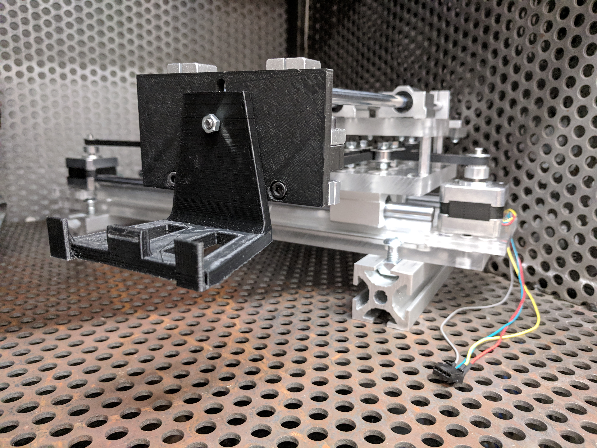

Highlights of the Week
Here’s another update from the Stitch Studio team for the past week!
ready for CSA inspection! #safetyfirst pic.twitter.com/5kE3HwDsF3
— Stitch Studio (@stitchstudio1) March 5, 2019
On the electrical side, Yaning fixed and repopulated the custom PCB, and Rachel made holes in the electronics enclosure for outgoing wires. Now our electronics are ready for tomorrow’s CSA inspection! Frank also added connectors to the stepper motor cables for easy attachment and detachment.
I 3D printed the adapter that interfaces between the embroidery hoop and the mount on the top stage. As well, I started planning for the symposium, creating embroidery designs for the demo and laying out the poster.
During testing, we found that the sewing machine was not running at a consistent speed, unlike the behaviour with our previous PCB. Since this would result in uneven stitching, fixing this problem is a priority for this upcoming week.
What’s Next?
Here’s what we plan to do this week:
- Get CSA approval
- Figure out what is causing the inconsistencies in speed control
- Complete the first end-to-end stitch test
- Continue symposium preparations
Stay tuned for our next weekly post, and follow us on Twitter for the latest updates!
Ben